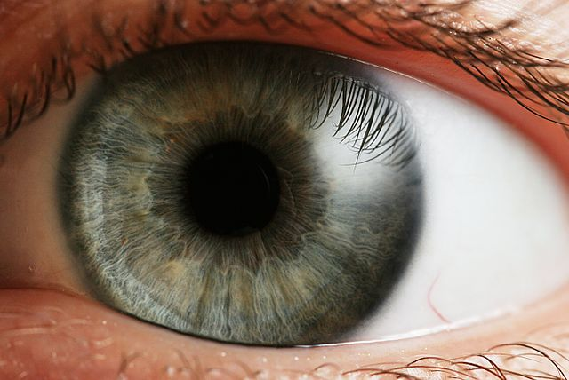
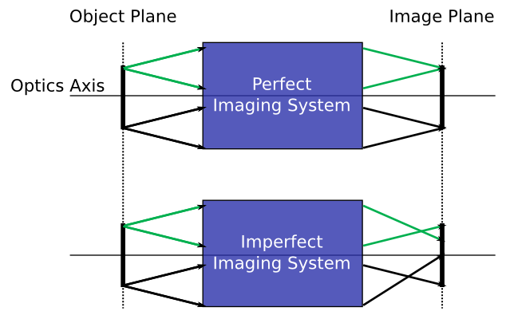

Paraxial Optics (2): What problem does it solve?
Summary
- Paraxial optics is a tool to aid in building optical systems.
- Paraxial optics solves the imaging problem.
- The imaging problem concerns finding the location, size, and orientation of an image given an object and an optical system.
- An optical system is a collection of objects like lenses, mirrors, prisms, cameras, etc. that collects the light emitted or scattered by an object and delivers it to another location where it can be detected and processed for information.
- The rules of paraxial optics allow for a perfect imaging system, i.e. a system that creates a one-to-one correspondance between points in an object plane and an image plane.
Paraxial optics solves the imaging problem
In this post I will use paraxial optics to mean paraxial geometrical optics. This is important since the paraxial approximation can also apply to the wave theory of light.
When learning a new theory, I often find it most useful to first identify the problem that the theory was developed to solve. This approach is particularly pertinent for learning paraxial optics, since the theory is largely used as a tool to aid in the construction of optical systems. Unfortunately, the fact that paraxial optics can help solve problems often becomes lost on people because they never actually build anything for the purpose of imaging. And even if a someone never builds a camera or microscope, I think it is difficult for them to see what paraxial optics concepts–such as principle planes and aperture stops–can do for helping them troubleshoot their hardware when it is not working as expected.
So, with this in mind, I will use this part in a series of blog posts to answer the following question: what is the problem that paraxial optics solves?
Paraxial optics solves the imaging problem 1. The imaging problem as I see it is simply this: given an optical system, how can one arrange its components to form the image of an object at a desired position and with a predictable size and orientation? This question has been asked by scientists, engineers, philosophers, and others since antiquity because we place enormous value in pictures.
To better understand this problem, I am going to step through the parts of this statement and explain what I mean by each. First, I mention that the imaging problem involves the use of an optical system. I have to admit that I use this term partly because it is part of the jargon of the optical sciences, but I also think that the word "system" nicely captures the essence of what I would like to say. An optical system is a collection of components such as lenses, mirrors, and prisms taken together with their mechanical supports and arranged in a meaningful way to capture and channel light as it travels from one place to another. Below is one example of an optical system that most people know pretty well.

{kind=link}
I have already mentioned that the components of an optical system can include things we commonly associate with optics, such as lenses and mirrors, but really no one such component is necessary to build an optical system so long as it captures and does something with light. For example, the pinhole camera uses nothing but a very small hole to form images; no lens is required! Still, we usually find some components like lenses much more frequently in optical systems than others, and the choice of which components to use really just depends on the specific type of imaging problem you are trying to solve.
Next in the statement of the imaging problem I say that we will be forming an image by arranging the components of our optical system in a clever way. Though the intuitive notion of an image is quite clear, I think it is actually extremely difficult to formally define it. For the purpose of this tutorial, I think it is best at this point to rely on the intuitive idea of an image until I have developed enough concepts to define it in terms of optical theory 2.
Finally, the imaging problem involves determining the location, size, and orientation of an image formed by the system. This means that rearrangement of our system's components is going to change these features of the image. Things such as the size of a CCD chip or the weight of a lens are going to place constraints on the values these properties can take.
Perfect imaging systems
At this point I should stress that paraxial optics is not the only theoretical tool for solving the imaging problem. We clearly can use non-paraxial geometrical optics or wave optics to determine the properties of an image formed by an optical system. However, what is interesting is that paraxial optics is one of very few theoretical frameworks in which a perfect image can be realized 3.

The above figure, which is called a ray-trace diagram, illustrates what I mean by a perfect imaging system. The system is represented as a "black box" that collects light coming from a two-dimensional plane (known as the object plane) and relays the light to another plane known as the image plane. The whole system is considered to be rotationally symmetric about a line called the optics axis so that I can represent it as a two-dimensional sketch instead of requiring a full, three-dimensional model. Finally, light is modeled as lines with arrows denoting the direction of propagation 4.
Now comes the important point. Within the framework of paraxial optics theory, it is possible to show that, given an object plane and an image plane, one can construct an optical system consisting of components that redirect the light rays in such a way that all the rays leaving a point in the object plane are brought back together at a corresponding point in the image plane. This means that the perfect optical system performs a one-to-one mapping of points in the object plane to points in the image plane. What's more, the distance between every point in the image plane and the optics axis is proportional to the distance between their corresponding points and the axis in the object plane by a constant factor. This factor is known as the magnification of the system.
The way this perfect imaging system is realized within the context of the theory is in the way the components redirect the rays coming from the object 5. What differentiates paraxial geometrical optics from plain old geometrical optics is the rules dictating how the redirection occurs.
One other important point is to consider what happens in imperfect imaging systems. Once we violate the assumptions of paraxial optics so that we no longer have a system operating within its range of validity, we cannot perform a true, one-to-one mapping of points from the object plane to the image plane. Instead, we find that rays coming from a single point in the object plane cannot all be brought back together in any image plane 6. We could say that the image plane is a concept that does not exist outside paraxial optics. And if the image plane does not exist, how are we to strictly define an image size and location?
Of course, we can find planes in non-paraxial systems in which there are pretty good images, and these usually correspond to the image planes we find by applying the equations and simplifications of paraxial optics. So paraxial optics is often our first tool for modeling an imaging system. It tells us roughly where our images will be formed and how big they are, but it will not tell us about image quality.
Conclusion
With this tutorial I hope to have provided you with a conceptual basis for understanding paraxial geometrical optics without including too many of its details. I think a conceptual basis such as this is much better than diving right into ray-trace diagrams with lenses and mirros. I think new students to optics often wonder what the importance is of paraxial optics and why it is needed when more complete optical descriptions exist. I hope that the discussion of the perfect imaging system and its existence only within the framework of paraxial geometrical optics helped to clarify its importance.
Footnotes:
You didn't expect me to give you the answer right away, did you? :)
Even the Wikipedia entry on the concept of an Image is a bit vague and philosophical.
Maxwell's Fisheye lens is another, but it is a good deal more complicated and, to my knowledge, has not been demonstrated at optical wavelengths.
It's important to realize that we are modeling the propagation of light as a ray; we are not saying that light is a ray. If light really was a ray and not an electromagnetic wave, then we would not need the wave theory of optics to explain phenomena like diffraction. Within the framework of the axioms of geometrical optics, a ray adequately describes how light propagates.
More specifically, it lies in the linearization of Snell's law, but I won't get into that yet.
This phenomenon is precisely what an optical aberration is within geometrical optics theory.
Comments
Comments powered by Disqus